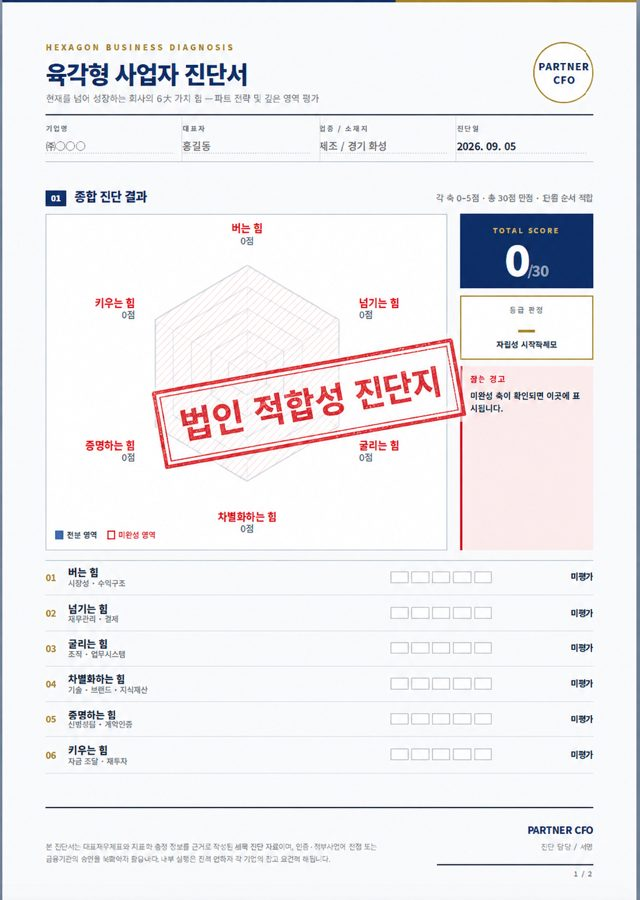

3
STEP 3
파트너CFO
"가지급금이 어디서 왜 생겼는지, 어떤 방법이 이 회사에서 실제로 방어되는지를 숫자로 먼저 검증하고, 다시 쌓이지 않도록 구조를 바꿉니다."
1:1 진단에서 실제로 사용하는 도구와 산출물
감(感)이 아니라 자료로 판단합니다. 아래는 실제 컨설팅에 사용하는 진단 서식과 산출물입니다.

진단 후 제공
기업 진단지
버는 힘·넘기는 힘·굴리는 힘·차별화하는 힘·증명하는 힘·키우는 힘. 6개 축을 점수화해 가지급금이 어느 지점에서 발생하고 있는지, 자금 흐름의 어느 고리가 끊겨 있는지 한 장으로 보여드립니다.

사전 진단표
정관·보수규정·자금 흐름 40여 개 항목 점검

재무 진단
잔액 추이와 지급이자 손금불산입 규모 산출

비상장주식 평가
정리 전후 주식가치 비교, 증여·상속 대비

상환 시뮬레이션
수단별 세부담과 지분율·부채비율 변화 비교
* 실제 서식 예시이며, 기업 정보는 모두 가려지거나 임의 값으로 대체되었습니다.
전문 분야
- • 가지급금 정리 및 재발 방지 구조 설계
- • 임원 보수·퇴직금 규정 및 정관 정비
- • 비상장주식 평가, 배당 정책 설계
- • 법인 전환 전략 (일반/세감면 포괄양수도)
- • 가족법인 설계 (증여·상속 연계)
컨설팅 원칙
- ✓ 법적으로 방어 가능한 구조 우선
- ✓ 착수금 없이 먼저 진단
- ✓ 전문가 네트워크 원스톱 실행
- ✓ 5~10년 재무 로드맵 관점 설계